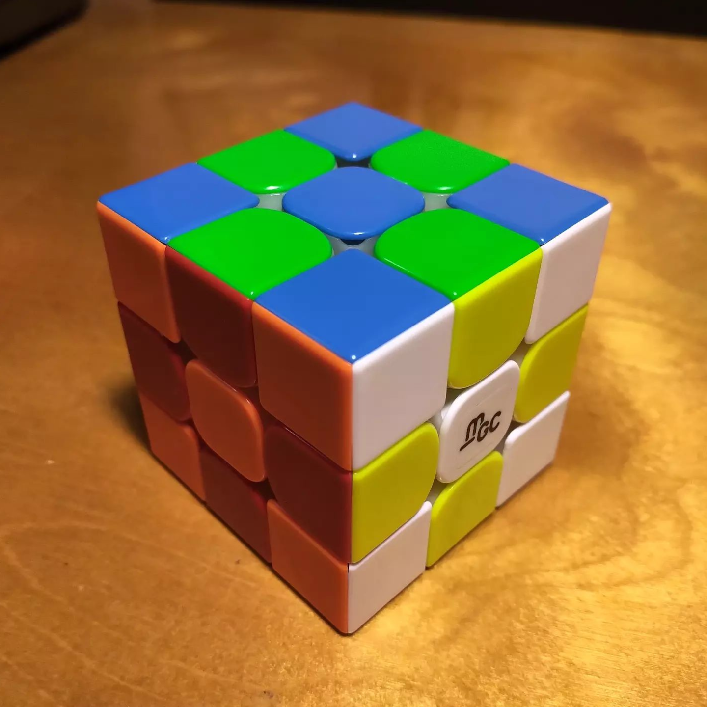
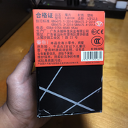
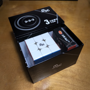
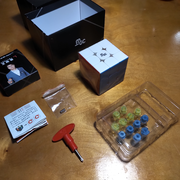
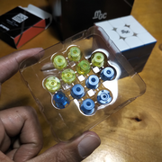
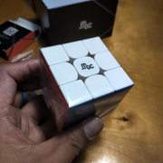
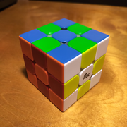
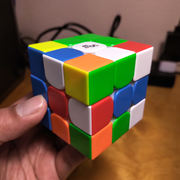

YJ MGC v2
{kind=link}

YJ8104 (2018)
YJ MGC v2. I don't see a lot of information about this cube, but I found the MGC v1 very interesting and I've been looking for a stickerless version of it. The cube has almost the same smooth yet bumpy feeling as that of the original MGC, but severely tamed, pulled back to a more conventional feeling. When I turn it roughly, the plastic clatters against itself, sounding like those wind-up teeth you sometimes see in cartoons. (Adding a thick lube to it helps a little with the noisiness.) Despite the slight bumpiness, it's quite smooth and fast. I'm constantly tempted to turn it faster and faster, hearing the plastic clatter and snap against itself more and more. It is also quite forgiving in terms of corner-cutting.
The colors are brighter than on the MGC, notably the red and the blue, but it doesn't detract from color recognition, notably between orange and red. The stickerless surfaces are glossy and catch the light well, making it look like pieces of candy.
As for adjustment, it includes replaceable spring capsules, some extra magnets, and a screwdriver. As has become traditional, I don't know when I will experiment with these, as the cube feels very good to me already.
I still think YJ should have released a stickerless version of the MGC v1 without changing the inner mechanism. But what we ended up with is still pretty distinctive in terms of cube feel; the v2 feels like a more grown-up, clean-shaven version of the original MGC. I certainly recommend it, if it is still available.
Original post: https://www.instagram.com/p/CxdfAUKxSqe
Specifications
| Make | YJ |
|---|---|
| Model | MGC v2 |
| Edition/Variant | |
| Model no. | YJ8104 |
| Release year | 2018 |
| Magnets (edge-corner) | 🧲 |
|---|---|
| Magnets (core) | ❌ |
| Magnets (maglev) | ❌ |
| Stickerless | ⭕ |
| Internals | Primary |
|---|---|
| Externals | Glossy plastic caps |
| Adjustment | Philips screw - axis distance; interchangeable spring capsules |
| Remarks | (none) |
Photos
{kind=link}
{kind=link}

Box side (with model number)
{kind=link}

Box contents
{kind=link}

Box contents (with adjustment pieces)
{kind=link}

Alternate spring capsules
{kind=link}

Cube (white face with logo sticker)
{kind=link}

Cube (checkerboard state)
{kind=link}

Cube (scrambled state)
Collections
This cube is part of the following collections: